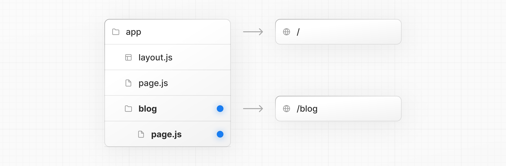
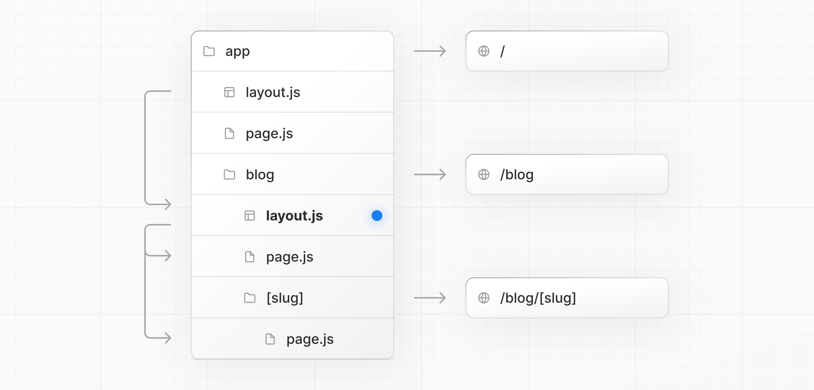

Introduction to Next.js and Deployment#
Duration: 45 minutes Learning Objectives:
Understand Next.js fundamentals and why it’s popular
Learn the difference between client and server components
Set up a Next.js project from scratch
Configure environment variables securely
Deploy a Next.js application to Vercel
What is Next.js?#
Next.js is a React framework that provides a complete solution for building modern web applications. It’s particularly popular for AI applications because of its:
Full-stack capabilities - Frontend + API routes in one project
Performance optimization - Automatic code splitting and optimization
Developer experience - Fast Refresh, TypeScript support
Deployment simplicity - Built by Vercel, optimized for their platform
Why Next.js for AI Applications?#
API Routes: Create backend endpoints without a separate server
Environment Variables: Secure API key management
Server Components: Reduce client-side JavaScript, faster loads
Streaming: Perfect for AI response streaming
Edge Functions: Deploy globally for low latency
Next.js Fundamentals#
Project Structure#
my-nextjs-app/
|-- app/ # App Router (Next.js 13+)
| |-- page.tsx # Home page (/)
| |-- layout.tsx # Root layout
| `-- api/ # API routes
| `-- chat/
| `-- route.ts # /api/chat endpoint
|-- components/ # React components
|-- lib/ # Utility functions
|-- public/ # Static assets
|-- .env.local # Environment variables (gitignored)
|-- next.config.js # Next.js configuration
`-- package.json # Dependencies
Routing in Next.js#
Next.js uses file-based routing. The file structure in app/ determines your URLs:
File Path |
URL |
Purpose |
|---|---|---|
|
|
Home page |
|
|
About page |
|
|
API endpoint |
|
|
Dynamic route |
The diagram below shows how Next.js nested routes map directly to folder structure:

File-based routing in action: the folder structure app/blog/[slug]/page.tsx creates the URL pattern /blog/:slug. Source: Next.js Documentation
Next.js also supports nested layouts, allowing you to share UI between routes while preserving state:

Nested layouts let parent routes wrap child routes. The root layout wraps the dashboard layout, which wraps individual dashboard pages. Source: Next.js Documentation
Server vs. Client Components#
Next.js 13+ introduced a new paradigm:
Server Components (default)#
// app/page.tsx
// This runs on the server
export default async function Page() {
const data = await fetchData(); // Can directly access database
return <div>{data}</div>;
}
Advantages:
Direct database access
Smaller client bundle
Better SEO
Secure (API keys never exposed)
Client Components#
// components/ChatInterface.tsx
'use client'; // This directive makes it a client component
import { useState } from 'react';
export default function ChatInterface() {
const [message, setMessage] = useState('');
return <input value={message} onChange={(e) => setMessage(e.target.value)} />;
}
When to use:
Need interactivity (onClick, onChange)
Use React hooks (useState, useEffect)
Access browser APIs
Rule of thumb: Use Server Components by default, Client Components when you need interactivity.
Setting Up Your First Next.js Project#
Prerequisites#
Make sure you have installed:
Node.js 18.17 or later
npm, yarn, or pnpm
Create a New Project#
# Using create-next-app (recommended)
npx create-next-app@latest company-research-assistant
# You'll be prompted with:
# Would you like to use TypeScript? Yes
# Would you like to use ESLint? Yes
# Would you like to use Tailwind CSS? Yes
# Would you like to use `src/` directory? No
# Would you like to use App Router? Yes (recommended)
# Would you like to customize the default import alias? No
cd company-research-assistant
Project Structure Created#
company-research-assistant/
|-- app/
| |-- favicon.ico
| |-- globals.css
| |-- layout.tsx
| `-- page.tsx
|-- public/
|-- .gitignore
|-- next.config.js
|-- package.json
|-- README.md
|-- tailwind.config.ts
`-- tsconfig.json
Install Dependencies#
npm install
Run Development Server#
npm run dev
Visit http://localhost:3000 to see your app!
Environment Variables & API Keys#
Why Environment Variables?#
Security: Keep API keys out of source code
Flexibility: Different keys for dev/staging/production
Best practice: Never commit secrets to git
Setting Up Environment Variables#
Create
.env.localin project root:
# .env.local (this file is gitignored by default)
OPENAI_API_KEY=sk-proj-xxxxxxxxxxxxx
NEXT_PUBLIC_APP_NAME=Company Research Assistant
Naming Convention:
NEXT_PUBLIC_*- Exposed to browser (use for non-sensitive config)No prefix - Server-only (use for API keys)
Access in Server Components:
// app/api/chat/route.ts
export async function POST(req: Request) {
const apiKey = process.env.OPENAI_API_KEY; // Secure
// ...
}
Access in Client Components:
'use client';
export default function Header() {
const appName = process.env.NEXT_PUBLIC_APP_NAME; // Only NEXT_PUBLIC_ vars work here
return <h1>{appName}</h1>;
}
Security Best Practices#
✓ DO:
Add
.env.localto.gitignore(done automatically)Use server-side API routes for sensitive operations
Provide
.env.examplefor other developers
# .env.example (commit this to git)
OPENAI_API_KEY=your_openai_api_key_here
✗ DON’T:
Commit
.env.localto gitUse
NEXT_PUBLIC_for API keysHardcode secrets in code
API Routes in Next.js#
API routes let you create backend endpoints in the same project.
Creating an API Route#
// app/api/hello/route.ts
import { NextResponse } from 'next/server';
export async function GET(request: Request) {
return NextResponse.json({ message: 'Hello from Next.js API!' });
}
export async function POST(request: Request) {
const body = await request.json();
// Process the request
return NextResponse.json({ received: body });
}
Access at: http://localhost:3000/api/hello
Real Example: Stock Price Endpoint#
// app/api/stock/route.ts
import { NextResponse } from 'next/server';
export async function GET(request: Request) {
const { searchParams } = new URL(request.url);
const ticker = searchParams.get('ticker');
if (!ticker) {
return NextResponse.json({ error: 'Ticker required' }, { status: 400 });
}
// In practice, you'd call Yahoo Finance API here
const mockData = {
ticker: ticker.toUpperCase(),
price: 175.43,
change: 2.15,
changePercent: 1.24
};
return NextResponse.json(mockData);
}
Call from your frontend:
const response = await fetch('/api/stock?ticker=AAPL');
const data = await response.json();
Deploying to Vercel#
Vercel is the platform built by the creators of Next.js. It offers:
Zero-config deployment for Next.js
Automatic HTTPS and custom domains
Edge network for global performance
Preview deployments for every git push
Generous free tier for personal projects
Deployment Steps#
1. Push to GitHub#
# Initialize git (if not already done)
git init
git add .
git commit -m "Initial commit"
# Create a new repository on GitHub, then:
git remote add origin https://github.com/yourusername/company-research-assistant.git
git branch -M main
git push -u origin main
2. Import to Vercel#
Go to vercel.com and sign up/login
Click “Add New…” -> “Project”
Import your GitHub repository
Vercel auto-detects Next.js settings ✨
Click “Deploy”
3. Configure Environment Variables#
In Vercel dashboard:
Go to Settings -> Environment Variables
Add your variables:
OPENAI_API_KEY=sk-proj-xxxxx
Click Save
Redeploy for changes to take effect
4. Access Your App#
Your app will be live at: https://your-project.vercel.app
Continuous Deployment#
Every time you push to GitHub:
Main branch -> Production deployment
Other branches -> Preview deployments
# Make changes
git add .
git commit -m "Add new feature"
git push
# Vercel automatically deploys!
Vercel CLI (Optional but Useful)#
Install the Vercel CLI for local development:
npm i -g vercel
Useful Commands#
# Deploy from terminal
vercel
# Deploy to production
vercel --prod
# Link local project to Vercel project
vercel link
# Pull environment variables from Vercel
vercel env pull
Common Next.js Patterns for AI Apps#
1. Streaming Responses#
// app/api/chat/route.ts
import { OpenAIStream, StreamingTextResponse } from 'ai';
import { Configuration, OpenAIApi } from 'openai-edge';
const config = new Configuration({
apiKey: process.env.OPENAI_API_KEY,
});
const openai = new OpenAIApi(config);
export async function POST(req: Request) {
const { messages } = await req.json();
const response = await openai.createChatCompletion({
model: 'gpt-4',
stream: true,
messages,
});
const stream = OpenAIStream(response);
return new StreamingTextResponse(stream);
}
2. Error Handling#
export async function POST(req: Request) {
try {
const body = await req.json();
// ... process request
return NextResponse.json({ success: true });
} catch (error) {
console.error('API Error:', error);
return NextResponse.json(
{ error: 'Internal server error' },
{ status: 500 }
);
}
}
3. CORS for External Access#
export async function GET(req: Request) {
const response = NextResponse.json({ data: 'example' });
// Add CORS headers
response.headers.set('Access-Control-Allow-Origin', '*');
response.headers.set('Access-Control-Allow-Methods', 'GET, POST, OPTIONS');
return response;
}
Resources & Further Learning#
Official Documentation#
Next.js Learn Course - Interactive tutorial
Video Tutorials#
Next.js 14 Crash Course by Traversy Media
Next.js for Beginners by freeCodeCamp
Example Projects#
Next.js Examples - Official examples
Vercel Templates - Production-ready templates
Hands-On Exercise: Create a Simple API#
Task: Create an API endpoint that returns company information.
Step 1: Create the Route#
// app/api/company/route.ts
import { NextResponse } from 'next/server';
const companies = {
AAPL: { name: 'Apple Inc.', sector: 'Technology', founded: 1976 },
MSFT: { name: 'Microsoft Corporation', sector: 'Technology', founded: 1975 },
JPM: { name: 'JPMorgan Chase & Co.', sector: 'Financials', founded: 1799 },
};
export async function GET(request: Request) {
const { searchParams } = new URL(request.url);
const ticker = searchParams.get('ticker')?.toUpperCase();
if (!ticker) {
return NextResponse.json(
{ error: 'Ticker parameter required' },
{ status: 400 }
);
}
const company = companies[ticker as keyof typeof companies];
if (!company) {
return NextResponse.json(
{ error: 'Company not found' },
{ status: 404 }
);
}
return NextResponse.json(company);
}
Step 2: Test It#
# In your browser or terminal
curl http://localhost:3000/api/company?ticker=AAPL
Expected response:
{
"name": "Apple Inc.",
"sector": "Technology",
"founded": 1976
}
Step 3: Call from Frontend#
// app/page.tsx
'use client';
import { useState } from 'react';
export default function Home() {
const [ticker, setTicker] = useState('');
const [company, setCompany] = useState<any>(null);
const fetchCompany = async () => {
const res = await fetch(`/api/company?ticker=${ticker}`);
const data = await res.json();
setCompany(data);
};
return (
<div className="p-8">
<input
type="text"
value={ticker}
onChange={(e) => setTicker(e.target.value)}
placeholder="Enter ticker (e.g., AAPL)"
className="border p-2 mr-2"
/>
<button onClick={fetchCompany} className="bg-blue-500 text-white px-4 py-2">
Search
</button>
{company && !company.error && (
<div className="mt-4">
<h2 className="text-xl font-bold">{company.name}</h2>
<p>Sector: {company.sector}</p>
<p>Founded: {company.founded}</p>
</div>
)}
</div>
);
}
Key Takeaways#
Next.js combines frontend and backend in one framework
File-based routing makes creating pages and APIs intuitive
Server Components are the default and more secure
Environment variables keep API keys safe
Vercel deployment is automatic and effortless
API routes eliminate the need for a separate backend
Checkpoint Questions#
What’s the difference between Server and Client Components?
Where should you store your OpenAI API key?
How do you create an API endpoint in Next.js?
What happens when you push code to GitHub with Vercel connected?
Next Steps#
Now that you understand Next.js basics, we’ll integrate ChatKit to build our financial research assistant!